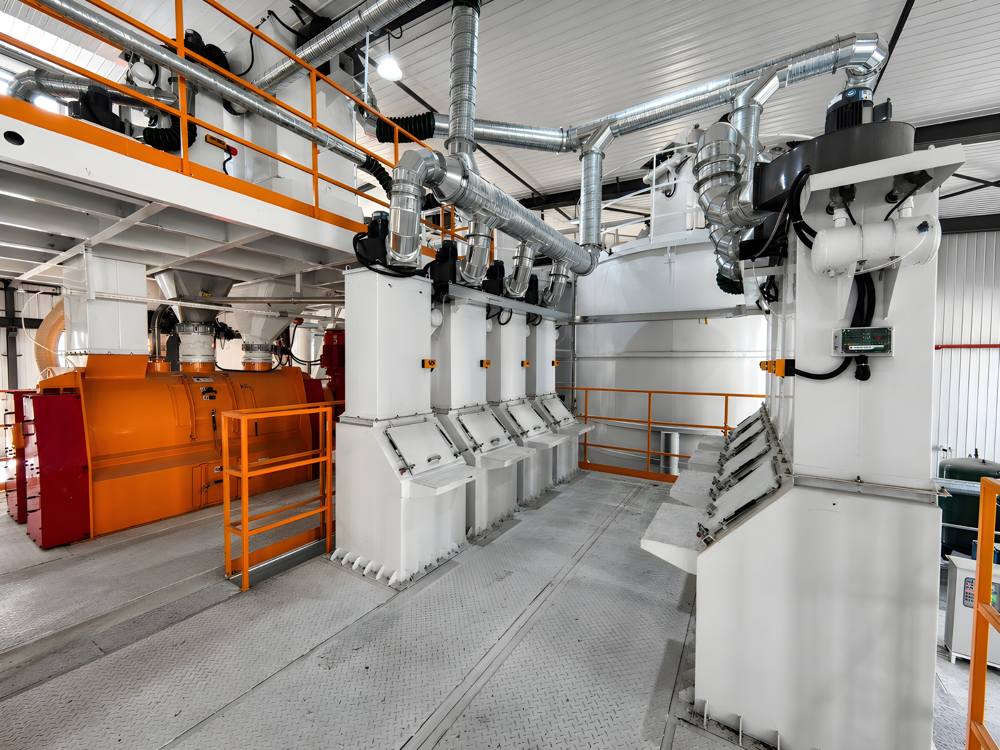

Technology & Process

1. Raw Material Receiving & Classification
Incoming materials are received through enclosed feeding systems...

2. Multi-stage Crushing System
The slag is processed through primary and secondary crushing, followed by fine separation, allowing materials of different particle sizes to be prepared for efficient downstream recovery and purification.

3. High-efficiency Metal Recovery
Magnetic separation is used to recover iron, while eddy current separation further extracts valuable non-ferrous metals such as copper and aluminum from the processed material stream.

4. Wet Purification System
Gravity separation and dewatering treatment are applied to improve material cleanliness, while internal water circulation reduces wastewater discharge and supports stable environmental compliance.

5. Recycled Material Production
Purified materials are mixed, molded, cured, and standardized into recycled outputs suitable for construction, infrastructure, and other compliant resource-based applications.

6. Fly Ash Stabilization & Leaching Control
Fly ash treatment focuses on stabilization, detoxification, and leaching-risk control, helping reduce heavy-metal mobility and supporting compliant downstream disposal or utilization pathways.